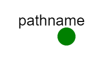

Overview
The purpose of this exercise is to introduce you to pathname attacks and give you a first-hand opportunity to see them in source code, exploit them, and patch them. After successfully completing this exercise, you will be able to:
- Accurately identify and describe Pathname attacks
- Identify Pathname Attacks in a CGI script written in Perl
- Understand how they can lead to unauthorized access to private data
- Be able to repair these types of security holes
- Author memos describing in detail your findings and code changes.
You should be familiar with the Unix command line, POSIX permissions, and basic programming. The exercise will use Perl and HTTP, but at introductory levels.
Required Reading
Pathname Attacks
A file's "pathname" determines its location in the filesystem hierarchy. An "absolute path" includes the entire path from the root of the filesystem, such as /var/log/apache2/access.log. Relative paths are specified with respect to a particular directory. For example, if the current working directory of a user (or a process) is /var/log, then the relative path to the Apache access log would be apache2/access.log -- /var/log is not specified at the beginning because it is the current working directory.
Much of pathname security revolves around making sure that an application is only able to access files in specific locations. For example, the Apache web server typically only accesses files in its "DocumentRoot", which is often /var/www. That way, Apache won't even attempt to honor a request for /etc/shadow. More generally, we can imagine wanting to constrain an application to a specific directory, like /jail or a set of directories listed in a configuration file. While security-conscious applications will have controls to limit accesses to those directories, many programs recklessly assume that input from users is valid. Pathname attacks involve accessing files that should be restricted by finding uncontrolled opportunities for exploits or circumventing controls when they exist.
If the server or application runs as root (e.g., if it is set SUID-root) and can "escape" the jail, then potentially any file on the system could be read, including /etc/shadow. However, even if the server/application doesn't run as root, it's likely that there are readable files on the system that, while readable to every local user, shouldn't be readable to everyone on Earth with a web browser (e.g., /etc/passwd).
Many applications simply perform no validation of pathnames at all, so an attacker can often gain illegitimate access by finding a way to input a malicious path. However, because there are essentially an infinite number of ways to express the same pathname, attackers can often circumvent simplistic controls, such as checking that a path begins in a certain way (e.g., /jail). Here are two common approaches:
Special Pathname Tokens: slash, dot, and dot dot
There are three special pathname tokens in UNIX. First, a leading / (called "slash" character indicates the root of a) filesystem. A pathname that starts with /, such as /var/log/apache2/access.log is, by definition, an absolute path. The other two special tokens are relative to the current working directory. A single . (called "dot") indicates the current working directory, while .. (called "dot dot") indicates the parent directory of the current working directory. Accordingly, the command
$ cp /tmp/foo.txt .... means "copy the file /tmp/foo.txt to here (where it will be named foo.txt)". The "dot dot" token is often used in the command
$ cd ..... which means "change directory to the parent directory of the current working directory. However, both . and .. can be used like any pathname element. This can lead to some odd pathnames. For example, the following paths all refer to the same file: /var/log/apache2/access.log
/var/log/apache2/./././access.log
/var/log/apache2/../apache2/access.log
/var/log/apache2/../../../var/log/apache2/access.log
/var/../var/log/../log/apache2/../apache2/access.log
This is because . does not change the working directory as the pathname is parsed, and .. ascends to the parent of the current working directory (each .. "un-does" the effect of the previous directory descent.
These special tokens are relevant for pathname security, because they can allow an attacker to "get out of jail" if the application does not completely mediate the paths that are allowed. For example, suppose the application requires that every file path begins with "/jail. The thought is that only files like /jail/file1 and /jail/file2 would be accessible. However, the file /jail/../etc/passwd is a pathname that starts with /jail but does not refer to a file within /jail! The security control has been circumvented!
Hard links and Symbolic Links
Another property of many filesystems is something called a file link. A link is a directory entry that points to another file. There are two types of file links in POSIX; hard links and symbolic (or soft) links.
Links are created using the utility ln with the following syntax:
$ ln -s target_file link_file # create a symbolic link$ sudo ln target_file link_file # create a hard link (requires root access)Links allow more than one file name to refer (or "point") to the same data, although the mechanism for hard and soft links differs. For hard links, the link points to a fundamental data object on the disk (called an inode). An inode is not a filename, but the disk record that a file points to. Hard links can be removed like regular files -- in fact, they are regular files (see infobox below). When the last hard link to a file (i.e., inode) is removed, the inode itself is freed and the disk space can be reused (i.e., the file is "deleted").
The following output helps demonstrate the behavior of hard links. First, we create the file foo containing the word "HI!":
$ echo "HI!" > foo
$ cat foo
HI!Now, we create a hard link to foo. Note the requirement of sudo.
$ sudo ln foo hardlink-to-foo
[sudo] password for pedro:After creating the hard link, we can read it just like foo:
$ cat hardlink-to-foo
HI!Listing the files, we see that foo and hardlink-to-foo are the same size:
$ ls -al
total 24
drwxr-xr-x 2 pedro pedro 4096 Mar 20 12:06 .
drwxrwxrwt 8 root root 12288 Mar 20 12:06 ..
-rw-r--r-- 2 pedro pedro 4 Mar 20 12:06 foo
-rw-r--r-- 2 pedro pedro 4 Mar 20 12:06 hardlink-to-fooIn fact, if we tell ls to show us the inode (using the -i switch), we see that both files point to the same inode!
$ ls -il
total 8
7079805 -rw-r--r-- 2 pedro pedro 4 Mar 20 12:06 foo
7079805 -rw-r--r-- 2 pedro pedro 4 Mar 20 12:06 hardlink-to-fooRemoving foo does not affect hardlink-to-foo, because hardlink-to-foo is a normal file.
$ rm foo
$ cat hardlink-to-foo
HI!Finally, removing hardlink-to-foo removes the file.
$ rm hardlink-to-foo
$ ls -al
total 16
drwxr-xr-x 2 pedro pedro 4096 Mar 20 12:07 .
drwxrwxrwt 8 root root 12288 Mar 20 12:07 ..In contrast, soft links -- more commonly called symbolic links or symlinks -- point not to specific inodes on disk, but rather to a specific filename. If the filename pointed to by a symlink is deleted, the symlink is not deleted. Instead, it is "broken" -- attempting to access the symlink will result in a "No such file or directory" error, not because the symlink is gone, but because the target file is gone.
The following output helps demonstrate the behaviors of symlinks:
First, create foo and make a symlink to foo:
$ echo "HI!" > foo
$ ln -s foo symlink-to-fooList the files. What do symlinks look like?
$ ls -al
total 20
drwxr-xr-x 2 pedro pedro 4096 Mar 20 11:28 .
drwxrwxrwt 9 root root 12288 Mar 20 11:28 ..
-rw-r--r-- 1 pedro pedro 4 Mar 20 11:28 foo
lrwxrwxrwx 1 pedro pedro 3 Mar 20 11:28 symlink-to-foo -> fooNotice that symlink-to-foo is shown as "pointing" (-->) to foo. Also note that the symlink's permission block starts with l -- the special marker identifying a symbolic link.
What if we list the inodes of these file, like we did for hard links?
$ ls -il
total 4
7079805 -rw-r--r-- 1 pedro pedro 4 Mar 20 12:15 foo
7080435 lrwxrwxrwx 1 pedro pedro 3 Mar 20 12:15 symlink-to-foo -> fooAs expected, foo and symlink-to-foo do not point to the same inode, but are completely different disk resources.
What happens when we read foo or its symlink?
$ cat foo
HI!
$ cat symlink-to-foo
HI!We see that both files have the same content. What happens if we remove foo and try to read the symlink?
$ rm foo
$ cat symlink-to-foo
cat: symlink-to-foo: No such file or directoryWe see that the symlink no longer works. However, it's unclear if foo is gone or if it is symlink-to-foo that is gone. Which is it?
$ ls -al
total 16
drwxr-xr-x 2 pedro pedro 4096 Mar 20 11:28 .
drwxrwxrwt 9 root root 12288 Mar 20 11:28 ..
lrwxrwxrwx 1 pedro pedro 3 Mar 20 11:28 symlink-to-foo -> fooHere we see that, although foo has been removed, symlink-to-foo lives on, but the link is "broken" -- it's target is no longer present.
Links (both hard and soft) complicate filesystems because they allow loops to exist in what would otherwise be free of cycles. This is because in POSIX, directories are files, and links can point to files. If a link in a subdirectory points to one of its parent (or ancestor) directories, a loop is created. For example:
$ mkdir child
$ cd child
$ ln -s .. child # make a symlink pointing to '..' named 'child'
$ ls -al
total 8
drwxr-xr-x 2 pedro pedro 4096 Mar 20 12:18 .
drwxr-xr-x 3 pedro pedro 4096 Mar 20 12:18 ..
lrwxrwxrwx 1 pedro pedro 2 Mar 20 12:18 child -> ..
$ ls child
child
$ ls child/child/child
childAs a result, applications must be able to cope with the possibility of cycles in directory structures.
Hard links and soft links are relevant to pathname security because, like the "parent directory" token .., people can use them to subvert security controls. For example, consider a program that runs inside the directory /jail and is only allowed to access files whose paths begin with "/jail/...", such as /jail/file1 or /jail/file2. A user who has write access to /jail could create a symbolic link like so:
$ cd jail
$ ls -al
total 8
drwxr-xr-x 2 pedro pedro 4096 Mar 20 12:26 .
drwxr-xr-x 3 pedro pedro 4096 Mar 20 12:26 ..
-rw-r--r-- 1 pedro pedro 0 Mar 20 12:26 file1
-rw-r--r-- 1 pedro pedro 0 Mar 20 12:26 file2
$ ln -s /etc/passwd file3
$ ls -al
total 8
drwxr-xr-x 2 pedro pedro 4096 Mar 20 12:26 .
drwxr-xr-x 3 pedro pedro 4096 Mar 20 12:26 ..
-rw-r--r-- 1 pedro pedro 0 Mar 20 12:26 file1
-rw-r--r-- 1 pedro pedro 0 Mar 20 12:26 file2
lrwxrwxrwx 1 pedro pedro 11 Mar 20 12:26 file3 -> /etc/passwdNow, /jail/file3 exists inside /jail -- passing the security control -- but points to a resource outside of jail! Strictly speaking, the security control has been obeyed, yet the effect circumvents the control's intent! This attack requires an insider capable of creating symlinks.
Pathname Canonicalization
Because of these (and potentially other) pathname attacks, programs must treat all pathnames provided to the application as suspect and potentially malicious. Once received, applications must therefore perform input validation on pathnames, making certain that they are capable of properly validating all potential pathnames they could receive, rather than assuming any arbitrary limit on the form or content of pathnames -- otherwise an attacker only needs to find the one pathname attack that isn't defended.
The way to do this is through something called pathname canonicalization. Canonicalization takes any pathname provided and converts it to it's simplest or "truest" representation. For example, the canonical version of the path /jail/bar/baz/../../../somefile.txt is /somefile.txt and when the symlink /jail/somefile.txt (pointing to /etc/passwd) is canonicalized, it will be simply /etc/passwd. Perl has a canonicalization module called abs_path that takes as input an arbitrary path and returns the canonicalized path, which can be checked against whatever restrictions the application requires. By first canonicalizing the pathname and then checking it against whatever restrictions are necessary, you can be more confident that your application will be completely mediating the access as it should. This is another example of enforcing the principle of least privilege.
To use abs_path(), Perl programs must import the function from the Cwd library like so:
use Cwd 'abs_path';Then, they can use the function abs_path() to canonicalize input. After these two lines of Perl:
$badpath = "/jail/../etc/passwd";
$realpath = abs_path($badpath);... the variable $realpath would contain the string "/etc/passwd". This canonicalized pathname could then be checked against a list of known good paths (or be validated in some other way).
Additional Reading
- Directory Traversal at Wikipedia
- Canonicalization at Wikipedia
- Old GNU tar directory traversal vulnerability report
- A nice article on hand-crafting HTTP requests and CGI parameters
Software Tools
This section will describe some tools you may need to complete this exercise.
wget: non-interactive command-line network client
wget is a command-line web client useful for scripting interactions with servers. wget supports several protocols, but is mainly used for interacting with web servers. In its most basic use, the user specifies a URL on the command line, and wget fetches that URL. For example, to download Google's home page, one can simply execute:
$ wget http://www.google.com
--2024-08-21 19:53:30-- http://www.google.com/
Resolving www.google.com (www.google.com)... 142.250.188.228, 2607:f8b0:4007:814::2004
Connecting to www.google.com (www.google.com)|142.250.188.228|:80... connected.
HTTP request sent, awaiting response... 200 OK
Length: unspecified [text/html]
Saving to: ‘index.html.’
index.html [ <=> ] 19.99K --.-KB/s in 0s
2024-08-21 19:53:30 (185 MB/s) - ‘index.html’ saved [20467]Many interactions with web servers take place using the Common Gateway Interface, or CGI. If you've used a website and seen a URL containing lots of +s, ?s and &s, you've used a CGI -- even if you didn't know it. wget can also make CGI requests from the command line (or in a script), although because characters such as & have a special meaning on the command line, it is often necessary to enclose the request in single quotes, like this:
wget 'http://maps.google.com/maps?q=paris&hl=fr'
--2014-05-28 13:26:14-- http://maps.google.com/maps?q=paris&hl=fr
Resolving maps.google.com (maps.google.com)... 74.125.239.136, 74.125.239.133, 74.125.239.137, ...
Connecting to maps.google.com (maps.google.com)|74.125.239.136|:80... connected.
HTTP request sent, awaiting response... 302 Found
Location: https://maps.google.com/maps?q=paris&hl=fr [following]
--2014-05-28 13:26:14-- https://maps.google.com/maps?q=paris&hl=fr
Connecting to maps.google.com (maps.google.com)|74.125.239.136|:443... connected.
HTTP request sent, awaiting response... 200 OK
Length: unspecified [text/html]
Saving to: `maps?q=paris&hl=fr'
[ <=> ] 197,259 596K/s in 0.3s
2014-05-28 13:26:15 (596 KB/s) - `maps?q=paris&hl=fr' saved [197259]diff and patch: see differences and create source patches
In this exercise, you'll be fixing security vulnerabilities in a few simple programs. However, instead of your whole program, we only want the differences between your new, fixed, program, and the original. A file which contains only the changes between two revisions of a program is called a "patch." Fortunately, creating patch files for single-file source programs is easy.
To see the differences between two files on Unix, you use the diff utility:
$ diff -u one.txt two.txtAnother useful tool is called patch. patch takes properly-formatted diff output, and applies the changes to the original file. diff can generate this output with a few options:
$ diff oldcode.c newcode.c > fixed.patchThis above options for diff will create a patch with the filenames and all necessary information that the patch program requires. This makes patching as simple as executing:
$ patch oldcode.c -i fixed.patch -o new-patched-file.c... and this will create a patched version of the program that you can test. When submitting a patch file, it is highly recommended that you create the patch and then test it before submitting it to make sure that it works. You will not get any points for code that does not execute or compile in the exercise environment. If you're having permissions problems, consider switching to root by executing sudo su - or change the permissions of the source directory in question.
HTTP and CGI Protocols: sending commands to servers
One protocol that web servers use to support simple web apps is the Common Gateway Interface, or CGI. CGI defines the protocol for passing arguments to and from web applications (that's why many web apps end with the extension "cgi"). Those arguments are often tied to the values of HTML elements like form fields, radio buttons, and so on. For example, in this exercise you will select a memo to view via a drop down menu. CGI tells the memo application which memo to open and display, based on the value of the parameter set by the drop down menu form element.
CGI uses named parameters, as opposed to positional parameters. You've probably seen CGI parameters in a URL that looked something like this:
http://example.com/cgi-bin/order.cgi?food=steak&done=mediumThe CGI app will receive these variables based on their names. For example, in Perl, CGI parameters are acquired using the function param('name'), where 'name' is the parameter in question. In order.cgi above, one can get the value of the parameters 'food' and 'done' using param('food') and param('done'). This "named value" approach meshes well with the data structures known as "associative arrays" (called "dictionaries" in Python and "hashes" in Perl). An associative array (AA) is like a traditional array, except that instead of accessing elements using their numeric index, AA values are accessed using an alphanmeric key. (Sometimes you'll hear about AAs as being key-value data structures.) For example, in Perl, given a hash %labels, the label value for the key 'foo' can be read using $labels{'foo'} or by putting 'foo' into a string like so: $string = 'foo' and using $string as a key like so: $labels{$string}.
In security, "Incomplete Mediation" occurs when a control for some resource does not restrict access as fully as it should. Web applications are often vulnerable to incomplete mediation attacks because authors mistake the limited choices presented to the user as being restrictions enforced on the user. For example, if order.cgi used a dropdown menu to provide choices for the done parameter, it might include such options as rare, medium, and well. But there's nothing on the HTML side restricting a user from submitting the following URL:
http://example.com/cgi-bin/order.cgi?food=steak&done=charredInstead, applications must inspect any input they receive and make sure that the input meets the requirements of the application (in this case that the done parameter is one of rare, medium and well. This is called input validation. Pathname attacks are a common type of Incomplete Mediation errors in web applications that accept file paths as input, because naive developers do not realize that users can simply submit any pathname they desire.
There are many resources online explaining how CGI works and how to hand-craft HTTP requests and CGI parameters -- read some of them to help you experiment with memo.cgi/memo.pl.
Introduction
You are the security administrator for FrobozzCo, a large corporation with a great many secrets. You have just come back from a much-needed four week vacation in West Shanbar, only to find that FrobozzCo has been having some serious security issues! In order to do everything you need, you've prepared a test environment on SPHERE with the software installed.
Assignment Instructions
Setup
- If you don't have an account, follow the instructions here.
-
Create an instance of this exercise by following the instructions here, using
pathnameas Lab name. Your topology will look like below:
. - After setting up the lab, access your
pathnamenode.
Make sure that you save your work as you go. See the instructions in the submission section of this exercise for information about save and restore scripts. Make sure that you save any changes you make to the sourcecode, your patches, memos, etc. in your home directory so they are not lost when you swap out your experiment.
Tasks
Pathname Attacks -- The Memo Software
Something else is rotten in the state of FrobozzCo, and this time it is an inside job. FrobozzCo has an internal server that it uses for disseminating official company memoranda. All employees have access to this server via a web interface, but it is not reachable from the Internet without going through a firewall, and the only accesses in the logs have come from internal addresses. Somehow, for the last several weeks, user accounts on the server have been getting hijacked one by one. It seems clear: someone obtained and is "brute forcing" the password file and is using the newfound access to read private data. How could this be happening? Historically, UNIX systems kept their hashed passwords in /etc/passwd where they were encrypted (but world-readable). This made it trivial for an unprivileged user to feed the password file into a password cracker (sometimes on the same machine!) and obtain other authentication -- sometimes root or other privileged accounts. Modern unices combat this vulnerability by keeping the password portion in a file called /etc/shadow, where only root has access to it. Your system uses an /etc/shadow file, so you know that regular user accounts do not have access to password information. Furthermore, there is only one piece of in-house software on this computer, and it is not written in a language like C that is susceptible to buffer overflows; it is written in a scripting language with built-in memory management that is not vulnerable to that kind of attack. Yet, somehow someone has been able to read private data files like /etc/shadow using the memorandum software. This is bad. You are sure it must be somehow related to the memo viewing application, because all third-party software is up to date. The memo system works like this: users can log into the system via ssh and publish memos by writing files into the memo directory in their home directories. Then, the memo-reading CGI (which is setuid root ostensibly so it can read multiple users' memo directories) searches the memo directories and publishes a list of memos available for reading. A user can then use a web interface to select one of the memos from a list and read it. Your boss, William H. Flathead III is skeptical that the memo reader is the problem, because he wrote the memo reading program when he was a summer intern 15 years ago. Still, just in case, he asks you to produce a 1 page memo, working demo of the exploit, and a patch for the memo reading software, should a vulnerability exist. Either way, he also wants to know how to clean up this mess -- how severe is the compromise? How can we restore the system to a safe state?
Pathname Attack Tasks
- Load your Pathname Attacks exercise on SPHERE.
- Find the directory traversal vulnerability by experimenting with the application or by looking in the memo.pl code.
- The sourcecode for
memo.cgiis located in /usr/lib/cgi-bin/memo.pl -- the filememo.cgicallsmemo.pl(see above for more information) - If you have set up ssh tunneling to port 80 via local port 8118, the memo application can be accessed at http://localhost:8118/cgi-bin/memo.cgi
- Exercise a remote vulnerability in
memo.cgito read the private file/etc/shadow - Create an executable program demonstrating your exploit. Your program should display or save /etc/shadow. We've created a skeleton exploit script in
/root/submission/exploit.sh. Edit it with your favorite text editor. - Fix the flaw and create a patch of your new code against the original. Your fix should add input validation and make
memo.cgi/memo.plnon SUID-root so that your exploit would no longer work. - Write a ~1 page memo:
- describe the security flaw you found, how you fixed it, and how your demo exploit works. The memo itself should quote as little sourcecode as possible; for longer sections, refer to filenames and line numbers in the original or your attached source.
- Include in your memo:
- A recovery plan for the server, answering: How serious was this breach? What should be done with the server in order to secure it?
- An explanation of why it is not sufficient to simply make sure that the pathnames start with
/home/username/memo/or/root/memo/ - A description of an alternative design for memo.cgi/memo.pl that would not require it being SUID-root
- Any other observations or thoughts you might have.
- Store the following files in
/root/submission: - your memo
- your working demo with instructions
- your patch
- Use the scripts described in the submission section for creating a submission tarball.
What can go wrong
...
Submission Instructions
For this exercise, you will submit a tarball containing your patch, memo, and exploit code. Use the script submit.sh in /root on the server host for creating and restoring those tarballs.
submit.sh and restore.sh
Note: do not run submit.sh and restore.sh as sudo!
submit.sh will back up:
- The memo code in
/usr/lib/cgi-bin/memo.pl -
everything in
/root/submission, which should include:exploit.sh- your memo
- your patch
restore.sh will restore those files to their original locations, automatically overwriting whatever is there.
Note: do not run submit.sh and restore.sh as sudo!
Submit your tarball to your instructor.